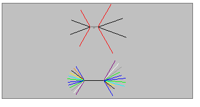
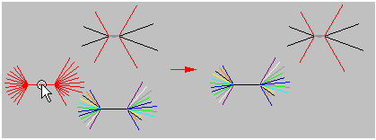

Creating nailboard views
You can use the Nailboard View command to flatten the 3D harness onto a 2D nailboard. The nailboard view is a rectangular object that contains linear segments that represent the branches in the harness.

Attributes, such as line length, line color, and line thickness, match the information stored for the harness design.
When placing the nailboard view, you can use the Nailboard Options dialog box to define how the view is placed. You can define such things as the view name, view width and height, and line or fill style. You can also define the basis for the selection of the main run.
You can use the Nailboard View command bar to set the scale for the view and set the sheet scale to match that of the nailboard view being placed.
When placed, the flattened geometry is centered on the nailboard rectangle. If the geometry does not fit correctly, you can edit the geometry to fit within the rectangle. You can move the flattened geometry and the nailboard independently of one another. If you reposition the flattened geometry, the nailboard rectangle does not move. However, if you reposition the rectangle, the flattened geometry moves with the rectangle.
Many times an assembly contains disjoint harnesses. For example, the following illustration shows an assembly with two disjoint harnesses, labeled (A) and (B).

When placed in a nailboard view, the harnesses are spaced vertically.

You can move or edit each disjoint harness.

If you edit an assembly and add or subtract disjoint harnesses, the nailboard view changes. If you add a disjoint harness to the assembly, it is added to the nailboard view. If you merge disjoint harnesses in the assembly, they are merged in the nailboard view.